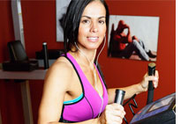

跑步机－使用
跑步机的基本介绍
想要买跑步机的话就要对跑步机有一个基本的认识，这篇文章给大家简单介绍一下跑步机的类型和功能；现如今跑步机的种类也有很多，一般是分为电动跑步机和机械跑步机，机械跑步机是根据跑步者的脚与跑步带产生摩擦带动跑
跑步机－安全
跑步机跑步的技巧和注意事项
很多人家里都会有跑步机，可你知道吗!用跑步机跑步也是有技巧的。如果不熟悉跑步的小技巧，很容易造成运动伤害。今天，小编就来跟大家讲讲跑步机跑步的技巧和注意事项。
跑步机－误区答疑

用跑步机健身最常见的误区
上跑步机前应先做热身活动，否则很容易造成大腿、小腿肌肉拉伤。上跑步机后应从慢走、快走等“动态”热身开始，逐步加大运动量，直至身体微微出汗，才开始进入跑步状态
跑步机－挑选保养
给你不得不买跑步机的理由
很多白领都是知道跑步锻炼是对身体很有帮助的，现在大城市里面有一大批人都有跑步机，他们或是为了健身，或是为了减肥，更有一些原因限制了他们出门跑步。